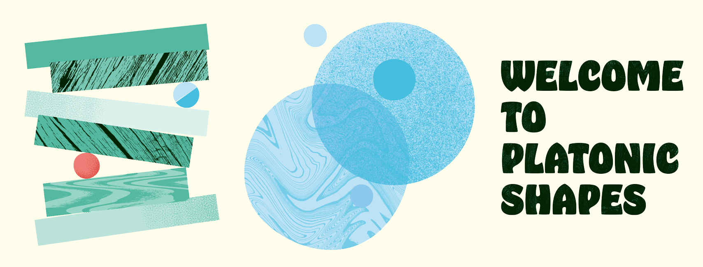
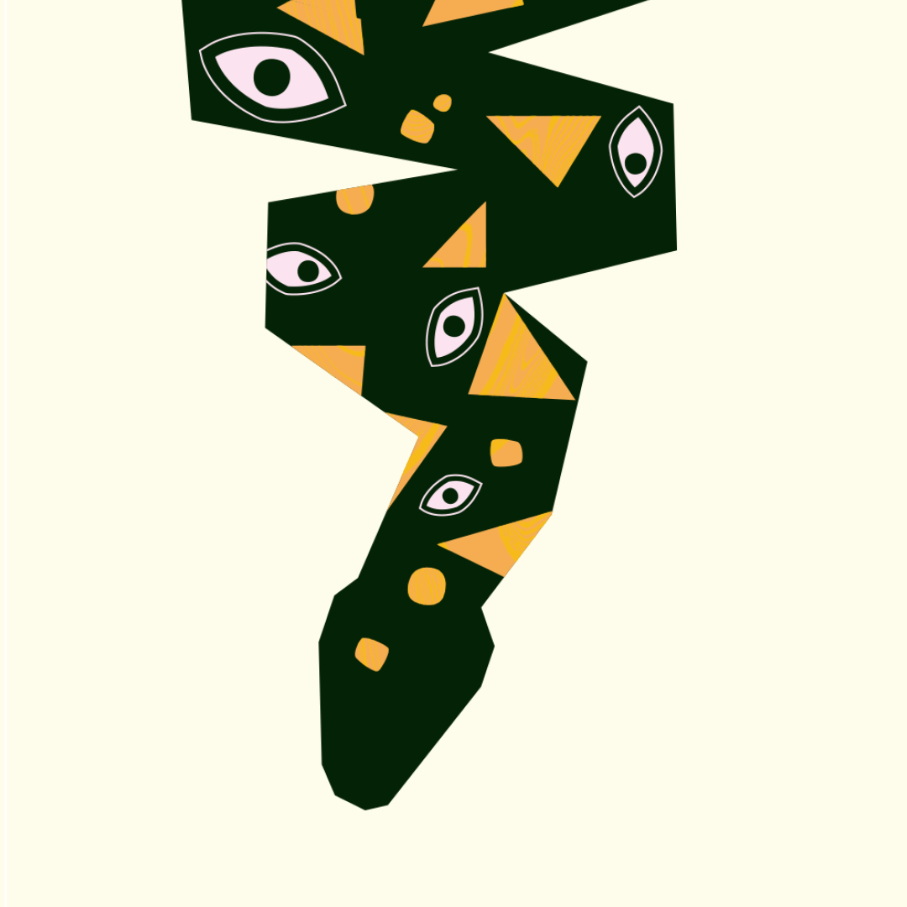
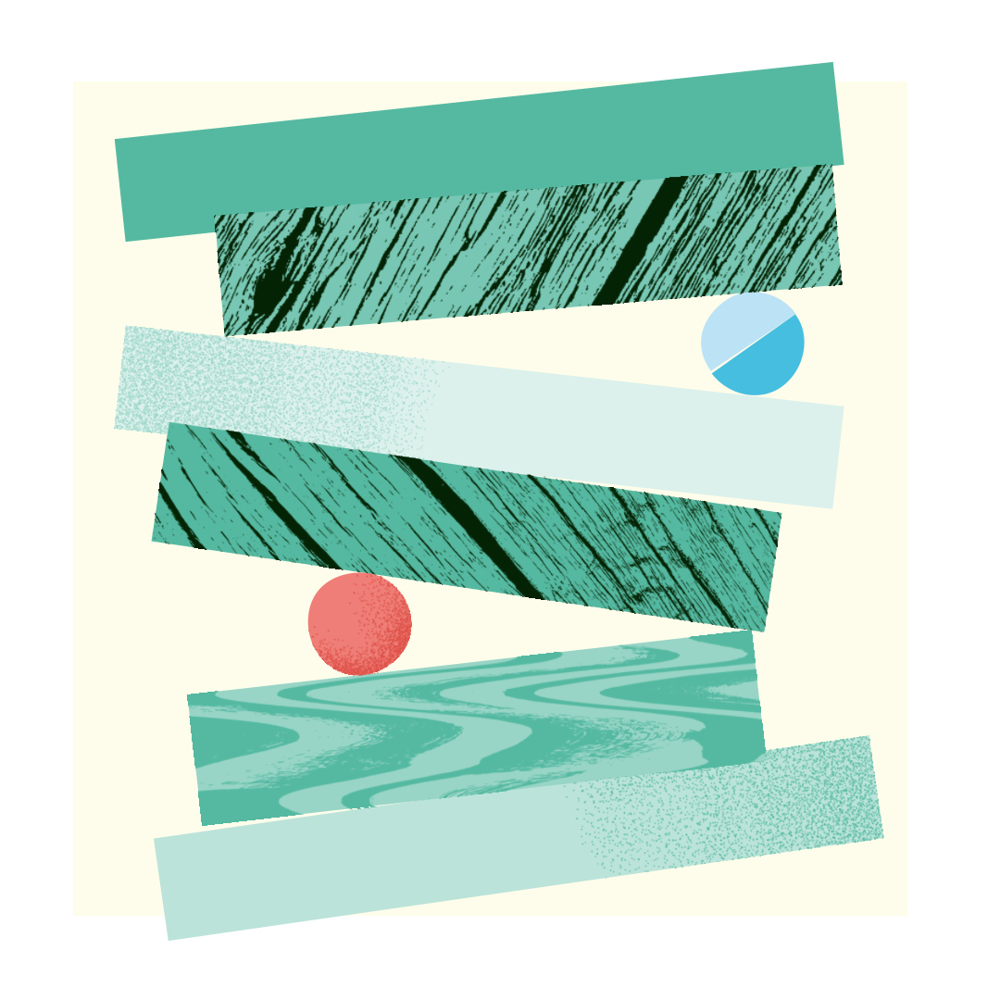
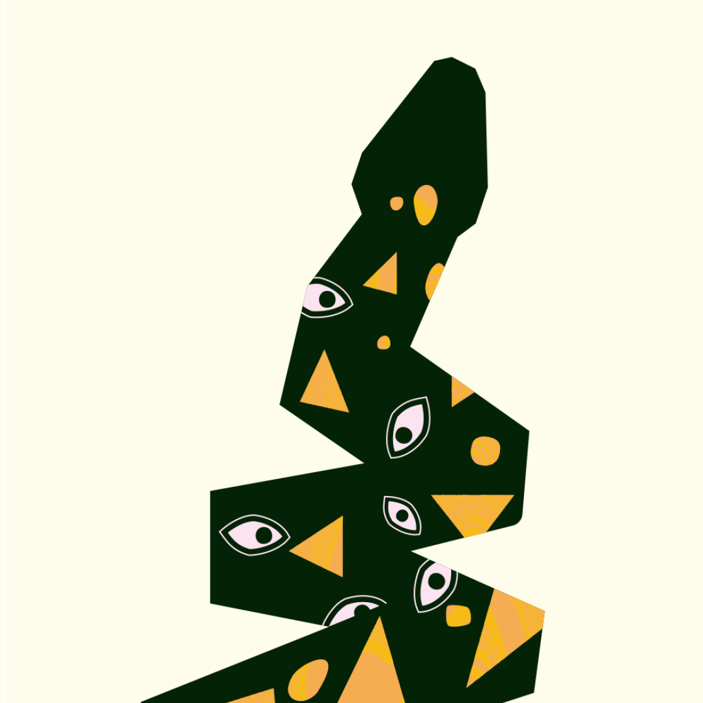
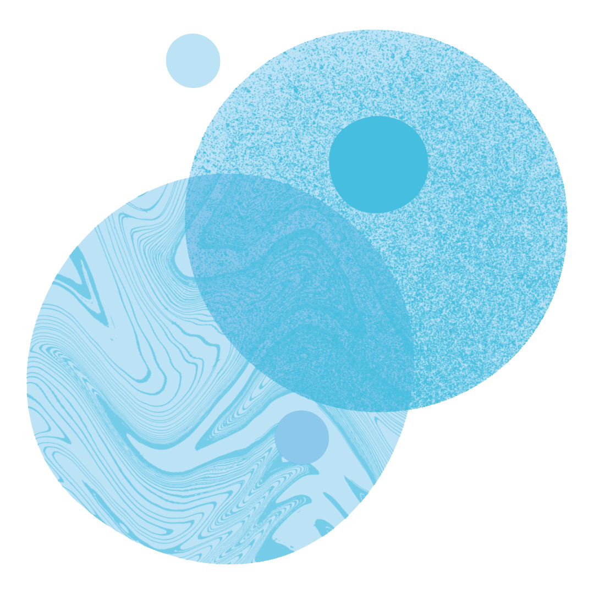
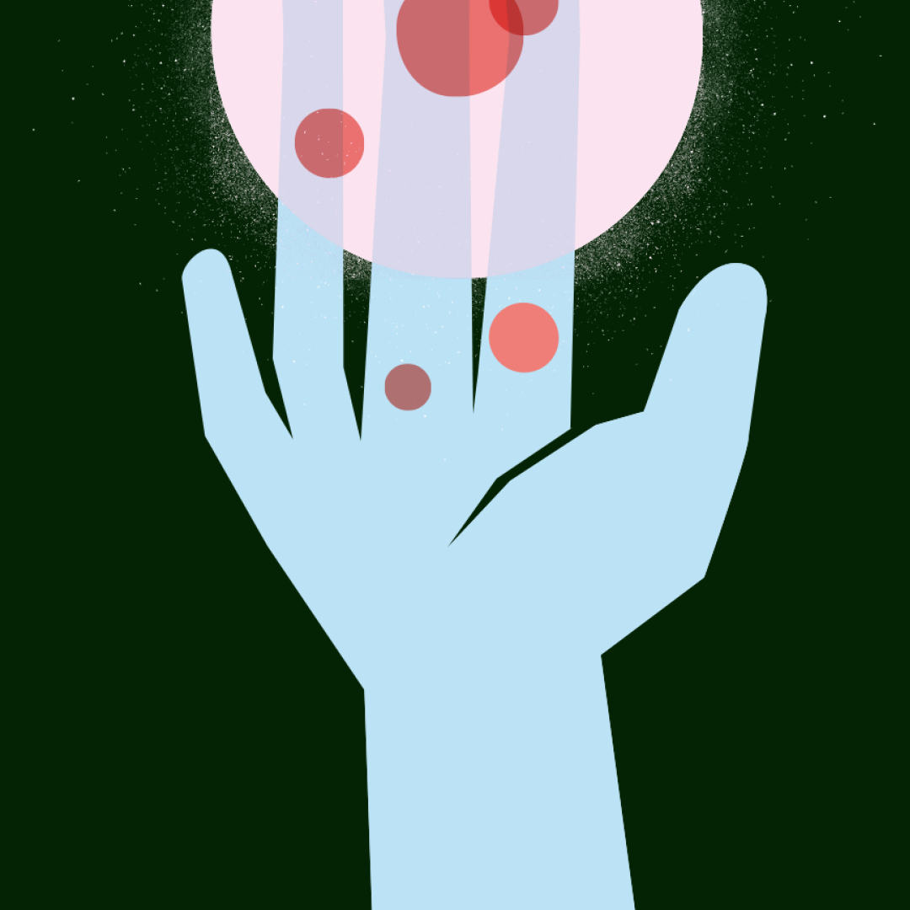

Side Project
Platonic Shapes
Platonic Shapes is Conor O'Boyle's separate popular music project, built around song-led releases, playful production, and a more immediate sound-world than his composing work for screen and concert hall.
The project sits apart from Conor's portfolio as a space for independent releases, visual artwork, and pop-facing musical experiments.
Artwork
Release Visuals


Streaming
Listen To Platonic Shapes
Hear the public Platonic Shapes artist profile on Spotify, including available releases and tracks.
Videos
Watch Platonic Shapes
Visual Identity
Shapes, Texture, Colour





Composer Portfolio
Back To Conor O'Boyle
For film, television, concert works, testimonials, and contact details, return to the main composer portfolio.
Composer Home